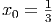

4.5 Condicionamento de sistemas lineares
Quando lidamos com matrizes no corpo do números reais (ou complexos), existem
apenas duas alternativas: i) a matriz é inversível; ii) a matriz não é inversível e,
neste caso, é chamada de matriz singular. Ao lidarmos em aritmética de precisão
finita, encontramos uma situação mais sutil: alguns problema lineares são mais
difíceis de serem resolvidos, pois os erros de arredondamento se propagam de
forma mais significativa que em outros problemas. Neste caso falamos
de problemas bem-condicionados e mal-condicionados. Intuitivamente
falando, um problema bem-condicionado é um problema em que os erros de
arredondamento se propagam de forma menos importante; enquanto problemas
mal-condicionados são problemas em que os erros se propagam de forma mais
relevante.
Um caso típico de sistema mal-condicionado é aquele cujos coeficiente
estão muito próximos ao de um problema singular. Considere o seguinte
exemplo:
Precisamos uma maneira de medir essas variações. Como os dados de entrada
e os dados de saída são vetores (ou matrizes), precisamos introduzir as definições
de norma de vetores e matrizes.
4.5.1 Norma de vetores
Definimos a norma Lp, 1 ≤ p ≤∞, de um vetor em v = (v
1,v2,…,vn) ∈ ℝn
por:
Para p = ∞, definimos a norma L∞ (norma do máximo) por:
Proposição 4.5.1 (Propriedades de normas). Sejam dados α ∈ ℝ um escalar e
os vetores u,v ∈ ℝn. Então, para cada 1 ≤ p ≤ ∞, valem as seguintes
propriedades:
- ∥u∥p = 0 ⇔ u = 0.
- ∥αu∥p = |α|∥u∥p.
- ∥u + v∥p ≤∥u∥p + ∥v∥p (desigualdade triangular).
- ∥u∥p →∥u∥∞ quando p →∞.
Demonstração. Demonstramos cada item em separado.
- Se u = 0, então segue imediatamente da definição da norma Lp, 1 ≤ p ≤∞,
que ∥u∥p = 0. Reciprocamente, se ∥u∥∞ = 0, então, para cada i = 1, 2,…,n,
temos:
Isto é, u = 0. Agora, se ∥u∥p = 0, 1 ≤ p < ∞, então:
Logo, pelo resultado para a norma do máximo, concluímos que
u = 0.
- Segue imediatamente da definição da norma Lp, 1 ≤ p ≤∞.
- Em construção ...
- Em construção ...
__
Exemplo 4.5.2. Calcule a norma L1, L2 e L∞ do vetor coluna v =
(1, 2,−3, 0).
Solução.
| ∥v∥1 | = 1 + 2 + 3 + 0 = 6 | |
|
| ∥v∥2 | =  = =  | |
|
| ∥v∥∞ | = max{1,2,3,0} = 3 | | |
No
Scilab podemos computar normas
Lp’s de vetores usando o comando
norm.
Neste exemplo, temos:
-->norm(v,1), norm(v,’inf’), norm(v,2)
ans =
6.
ans =
3.
ans =
3.7416574
♢
4.5.2 Norma de matrizes
Definimos a norma induzida Lp de uma matriz A = [a
i,j]i,j=1n,n da seguinte
forma:
ou seja, a norma p de uma matriz é o máximo valor assumido pela norma de Av
entre todos os vetores de norma unitária.
Temos as seguintes propriedades, se A e B são matrizes, I é a matriz
identidade, v é um vetor e λ é um real (ou complexo):
Casos especiais:

onde σ(M) é o conjunto de autovalores da matriz M.
Exemplo 4.5.3. Calcule as normas 1, 2 e ∞ da seguinte matriz:
Solução.
| ∥A∥1 | = max{12, 8, 18} = 18 | |
|
| ∥A∥∞ | = max{15, 7, 16} = 16 | |
|
| ∥A∥2 | =  = 13,98657 = 13,98657 | | |
No
Scilab podemos computar normas
Lp’s de matrizes usando o comando
norm.
Neste exemplo, temos:
-->A = [3 -5 7;1 -2 4;-8 1 -7];
-->norm(A,1), norm(A,’inf’), norm(A,2)
ans =
18.
ans =
16.
ans =
13.986578
♢
4.5.3 Número de condicionamento
O condicionamento de um sistema linear é um conceito relacionado à forma como
os erros se propagam dos dados de entrada para os dados de saída, ou seja, se o
sistema
 possui uma solução x para o vetor y, quando varia a solução x quando o dado de
entrado y varia. Consideramos, então, o problema
possui uma solução x para o vetor y, quando varia a solução x quando o dado de
entrado y varia. Consideramos, então, o problema
 Aqui δx representa a variação em x e δy representa a respectiva variação em y.
Temos:
Aqui δx representa a variação em x e δy representa a respectiva variação em y.
Temos:
 e,
portanto,
e,
portanto,

Queremos avaliar a magnitude do erro relativo em y, representado por
∥δy∥∕∥y∥ em função da magnitude do erro relativo ∥δx∥∕∥x∥.
Assim, definimos o número de condicionamento de uma matriz inversível A
como

O número de condicionamento, então, mede o quão instável é resolver o
problema Ax = y frente a erros no vetor de entrada x.
Obs: O número de condicionamento depende da norma escolhida.
Obs: O número de condicionamento da matriz identidade é 1.
Obs: O número de condicionamento de qualquer matriz inversível é igual ou
maior que 1.

 ≈ 51,95122.
≈ 51,95122.

 =
=  , com solução
, com solução  ,
,

 =
=  , com solução
, com solução  ,
,

 =
=  , com solução
, com solução  .
.